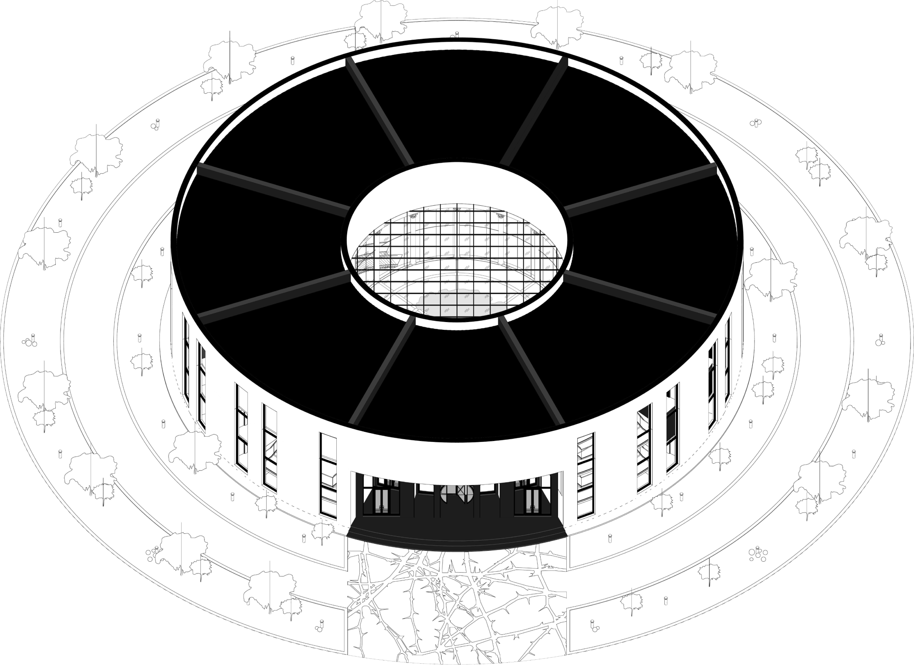

пространство
«ЖЕЛАЙ» построено по принципу колеса баланса: круг задаёт замкнутую систему, а оси делят пространство на сектора, повторяя деление колеса. Благодаря этому движение внутри становится не «прогулкой», а прохождением последовательных стадий.